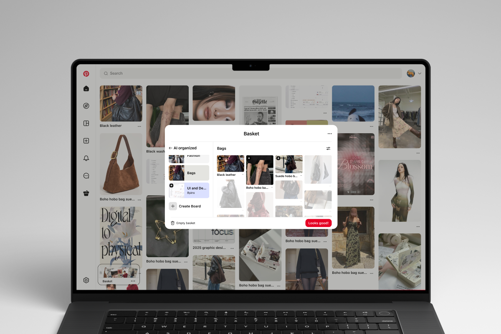

Case Study — Product Design
Widget Builder
Making a low-code platform actually low-code — a configurable widget system that let customers build 16+ dashboard components without engineering support.

Overview
A self-serve widget system, built to replace a multi-week engineering queue.
Our platform's customers were engineering teams building internal dashboards — and every new component request went through a multi-week backlog. Widget Builder reimagines that workflow as a self-serve system: a configurable library of chart, table, and metric widgets that product teams can assemble, style, and ship without writing a line of code.
I led the design end-to-end, from early workflow mapping through the final component library, partnering closely with engineering to make sure every configuration choice mapped to something we could actually ship.
Problem
Every dashboard request needed an engineer, and the queue grew faster than we could clear it.
Every dashboard request — a new chart type, a different data cut, a rearranged layout — required an engineer to hand-build it. That created a queue that grew faster than the team could clear it, and it meant the people who understood the data best (the product teams) had the least control over how it was presented.
We needed a system flexible enough to cover the long tail of real requests, but constrained enough that "no-code" didn't quietly become "no-code, except when it doesn't work."
Approach
Auditing two years of requests turned an open-ended canvas into a constrained set of primitives.
I started by auditing two years of past dashboard requests to find the actual shape of the problem — most requests were combinations of a small set of primitives (metric, trend, breakdown, table) rather than truly bespoke designs. That let us design a constrained set of widget types instead of an open-ended canvas.
Each widget got a configuration panel exposing exactly the choices that mattered — data source, grouping, comparison period — and nothing else. Engineering and I iterated on the config schema together so every option in the UI mapped directly to a supported system capability.

Outcome
16 components later, the one-off dashboard backlog is effectively gone.
Widget Builder shipped with 16 configurable components covering roughly 90% of historical requests. Product teams now assemble and adjust their own dashboards directly, and the engineering backlog for one-off chart requests is effectively gone.
75%
reduction in engineering customization work
16+
configurable dashboard components shipped
90%
of historical requests now self-serve